事前準備 〜GDevelopをブラウザで開こう〜
🎯 この章のゴール
- ブラウザでGDevelopのエディタ（ゲームを作る画面）が開ける
- GDevelopのアカウントを作って、ログインできている
- エディタの表示が日本語になっている
⚠️ 途中でうまくいかなくても大丈夫！
できたところまでで止めてOKです。
第1回の最初に講師と一緒に解決します。
「どこで止まったか」をメモしておいてくれると助かります。
ブラウザで動くため、ソフトのインストールは不要です。
作ったゲームをインターネット上に保存するため、アカウント登録用のメールアドレスが必要です。
この編では、ダンジョンでナイフを投げてゴブリン（敵）を倒すゲームを作ります。
表現はドット絵のデフォルメされたものですが、気になる場合は別の編（2D横スクロールアクションなど）もお選びいただけます。
登録などの作業は、できるだけお子さんと一緒に進めていただくようお願いします。
ご不明な点はお気軽にご連絡ください。
0-1. 準備するもの・確認すること
| 項目 | 内容 |
|---|---|
| パソコン | Windows 10/11 または Mac（マウスがあると遊びやすい）。 ナイフをマウスでねらって投げるゲームです |
| ブラウザ | Google Chrome または Microsoft Edge（最新版） |
| ネット環境 | Wi-Fiなど、安定してつながる環境 |
| メールアドレス | GDevelopのアカウント登録に使用（自分のがなければ保護者のものでOK） |
| 時間 | 20〜30分 |
ChromeやEdge、Safariなどがあるよ。
GDevelopはこのブラウザの中で動くゲームエンジンです。
🚨 Chromeがない／Safariしか使っていない人へ
Windows: Windowsには最初から Microsoft Edge が入っています。
Edgeを使えばOKです。
Mac: Safariでも動くことがありますが、講習では Google Chrome を推奨します。
保護者の方と相談して、Chromeを入れておいてください。
0-2. GDevelopってどんなもの？
GDevelop（ジーデベロップ）は、無料で使えるゲームエンジン（ゲームを作るための道具箱）です。
大きな特徴は、プログラムの文字を打たずに、ブロックを並べてゲームのルールを作れること。
しかもブラウザだけで動くので、重たいソフトをインストールする必要がありません。
この編では、GDevelopでダンジョンで敵と戦うローグライクゲームを1本作ります。
だから、どのPCからでも続きができる
0-3. GDevelopを開いてアカウントを作ろう
ChromeかEdgeを開いて、アドレスバー（画面の一番上の、URLを入れる欄）に次のアドレスを入力して Enter を押します。
https://editor.gdevelop.io
しばらく読み込みがあって、GDevelopのホーム画面が表示されたら成功です。
初回は表示まで少し時間がかかることがあります。
左はしに「学ぶ」「作成」「プレイ」「ショップ」「教える」というメニューが並んでいるのがホーム画面です。
最初は英語で表示されることがあります（そのときは「Learn」「Create」「Play」「Shop」「Teach」）。
日本語への切り替えは、このあとの手順6でやります。
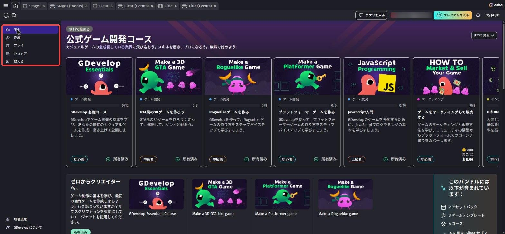
毎回アドレスを打つのは大変なので、ブックマークしておこう。
Windows: Ctrl + D を押して「完了」。
Mac: ⌘ + D を押して「完了」。
名前は「GDevelop」など、自分でわかるものにしておけばOKです。
ホーム画面の右上にある「新規登録」のボタンを押します。
となりの「ログイン」は、もうアカウントを持っている人がログインするボタンです。
まだ英語の表示なら「Sign up」「Log in」と書いてあります（表示を日本語にするのは手順6でやります）。
ボタンの名前や位置は、時期によって少し変わることがあります。
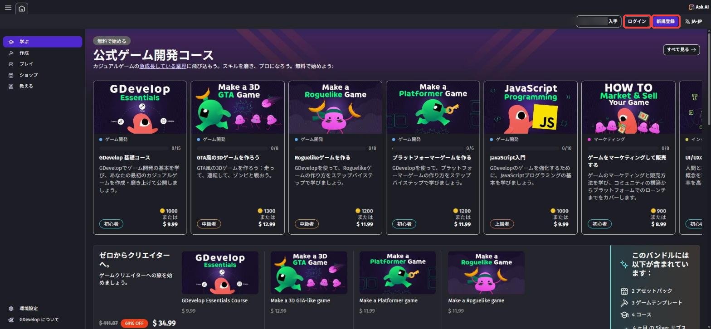
「GDevelopへようこそ！」の画面で、メールアドレス、パスワード、ユーザー名を入力して、右下の「アカウントを作成」を押します。
左の「Google でログイン」などのボタンで登録してもOKです（保護者の方と相談してね）。
英語の表示なら、入力欄は Email・Password・Username、ボタンは「Create account」です。
- ユーザー名は本名にしない。ニックネームを半角英数字で付けよう
- パスワードは紙のノートなど、なくさない場所にメモしておく
- 確認メールが届いたら、メールの中のボタンを押して登録を完了させる
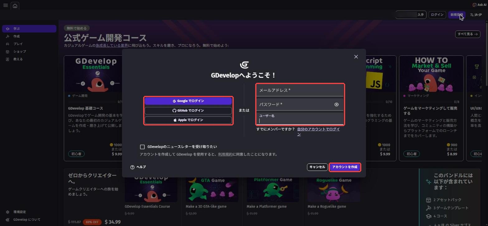
ホーム画面の右上に、自分のユーザー名やアイコンが表示されていればログインできています。
一度ブラウザを閉じて、もう一度 https://editor.gdevelop.io を開いても、ログインしたままになっているか確かめよう。
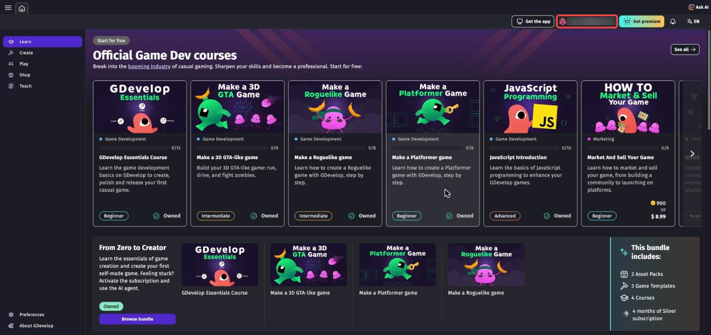
この教科書（日本語UI版）では、GDevelopを日本語の表示で使います。
教科書のボタン名がすべて日本語の画面に合わせて書いてあるので、表示をそろえておくと迷子になりません。
画面の右上にある、言語のボタン（「EN」や「JA-JP」と書いてある、文字のマークのボタン）を押します。
英語の表示だと「Language」という画面が開くので、選ぶ欄を「日本語 (Japanese)」にしよう。
表示が日本語に変わり、画面の名前も「言語」になります。
「GDevelopで使用する言語を選択」の欄が「日本語 (Japanese)」になっていたら、「閉じる」を押して完了です。
はじめから日本語の表示になっていた人は、そのままでOK。
うまくいかなければ、そのままで大丈夫。
第1回の最初に一緒に設定します。
家のPCと教室のPCで表示がちがっていたら、もう一度このボタンで日本語にしよう。
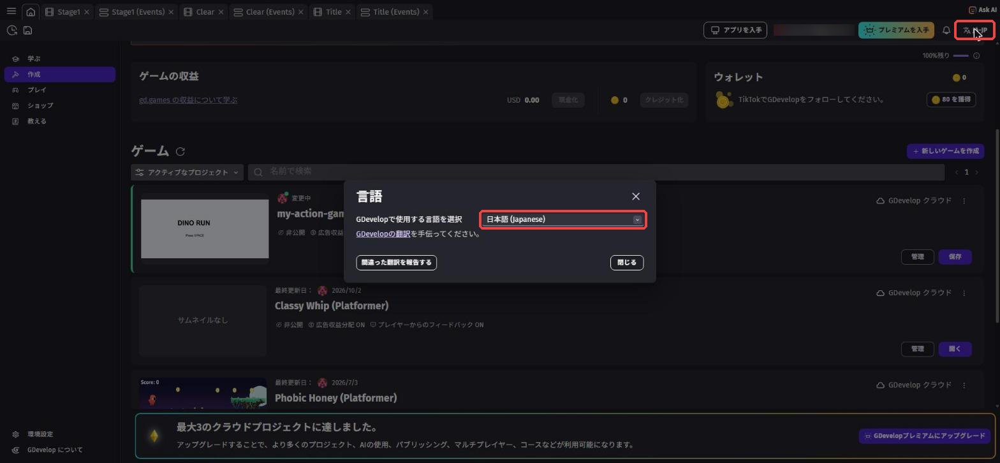
0-4. 無料プランで気をつけること
GDevelopの無料プランでは、アカウントに保存できるプロジェクト（ゲーム1本分のデータ）は3つまでです。
上限に達すると「最大3のクラウドプロジェクトに達しました。」と表示されて、新しいプロジェクトを作れなくなります。
この講座では、ゲームを1本（プロジェクト1つ）だけ作ります。
GDevelopコースの3つの編（2D横スクロールアクション・3Dアクション・ローグライク）を全部やっても、ちょうど3つに収まります。
上限に引っかからないように、講習が始まるまでは新しいプロジェクトを作らずに待っていてね。
画像・音・ルール（イベント）など、そのゲームに関係するものが全部ここに入る。
待ちきれない人へ（任意）
ホーム画面には、ほかの人がGDevelopで作ったゲームを遊べるコーナーや、学習用のコーナーがあります。
プロジェクトを作らずに遊ぶだけなら、上限は気にしなくて大丈夫。
「どんなゲームが作れるのか」を見ておくと、第1回がもっと楽しくなるよ。
4本目のゲームを作りたくなったら
講習が終わって、自分でもっとゲームを作りたくなったときのための話です。
3つの上限に達すると、ホーム画面の下にこのお知らせが出ます。
無料プランのままでも、下の方法で4本目からのゲームを作れます。
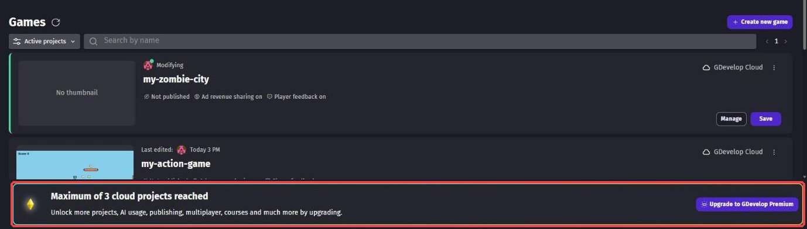
方法1：GDevelopのアプリ版を使う（おすすめ）
GDevelopには、PCにインストールして使う無料のアプリ版（デスクトップアプリ）があります。
アプリ版では、プロジェクトを自分のPCの中に保存できます。
PCに保存したプロジェクトは、3つの上限に数えられません。
アプリは、画面右上の「アプリを入手」か、公式サイト gdevelop.io からダウンロードできます。
インストールは、保護者の方と一緒にやろう。
ブラウザ版のGDevelopは、プロジェクトをここ（GDevelop クラウド）に保存する。
どのPCからでも開けるかわりに、無料プランでは3つまでしか置けない。
方法2：コピーをPCに残してから、クラウドのプロジェクトを消す
もう作り終わったゲームを、クラウドからPCに移して、枠を1つ空ける方法です。
① ゲームを開いた状態で、左上の「≡」→「ファイル」→「名前をつけて保存」を選びます。
②「コピーをダウンロード」を押します。
次の画面で、紫色のボタン（ゲームと素材をまとめてダウンロードするボタン）を押します。
ゲームのデータが「gdevelop-game.zip」という名前のzipファイルで、PCの「ダウンロード」フォルダに保存されます。
何本も保存すると全部同じ名前になるので、どのゲームかわかる名前に変えておこう。
③ ホーム画面の「ゲーム」の一覧で、消したいゲームの右にある「⋮」→「削除」を押すと、クラウドから消えて枠が1つ空きます。
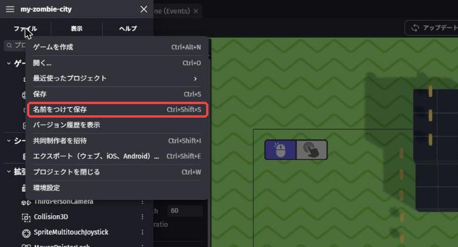
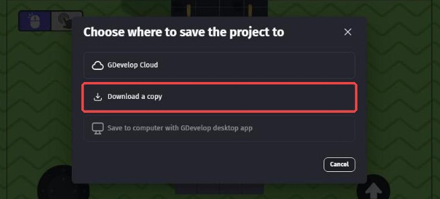
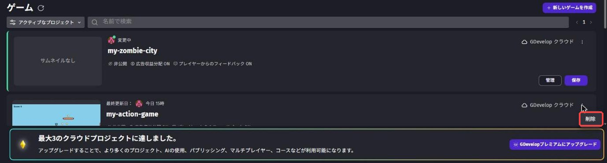
方法2の注意
消したプロジェクトは、元に戻せません。
必ず②でコピーを保存できたことを確かめてから消そう。
講習で作っているゲームは消さないでね。
消す前に、保護者の方か講師に確認しよう。
ブラウザ版では、保存したコピーを開けません。
ブラウザ版で「ファイル」→「開く...」を押しても、アプリ版で開く方法しか出てきません。
コピーをもう一度開いて続きを作るには、方法1のアプリ版が必要です。
アセットストアの画像や音は、zipの中ではなくインターネット上に置かれています。
開き直すときは、ネットにつながっている必要があります。
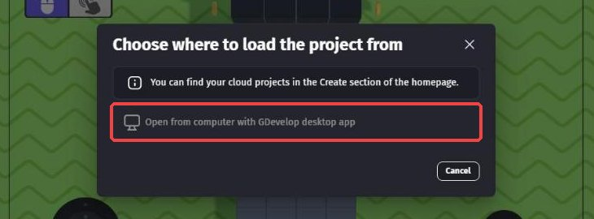
方法3：有料プランにする
有料プランにすると、クラウドに置けるプロジェクトの数が増えます。
2026年10月の時点では、Silverで50個、Goldで100個、Proでは上限なしです。
お金がかかるので、必ず保護者の方と相談して決めてね。
料金やプランの中身は変わることがあるので、公式サイトの「Pricing」のページで確かめよう。
講師・学校の方へ
教室や学校向けの「Education」プランでは、生徒1人あたり100個までクラウドに保存できます。
生徒のアカウントを先生がまとめて作る仕組みもあります。
料金は見積もりです。
くわしくは公式サイトの「GDevelop for Education」のページを見てください。
0-5. 🚨 つまずきポイント集
画面が真っ白のまま、いつまでも表示されない
原因: 読み込みに時間がかかっている、またはブラウザが古い。
直し方: 1〜2分待っても変わらなければ、ページを再読み込み（Ctrl + R⌘ + R）。
それでもダメなら、ChromeかEdgeを最新版にしてからもう一度開こう。
確認メールが届かない
原因: 迷惑メールフォルダに入っている、またはメールアドレスの打ちまちがい。
直し方: 迷惑メールフォルダを確認しよう。
見つからなければ、メールアドレスがまちがっていないか確かめて、もう一度登録してみよう。
「このサイトにアクセスできません」（This site can't be reached）などと出て開けない
原因: アドレスの打ちまちがい、またはネットにつながっていない。
直し方: editor.gdevelop.io のつづりを確認しよう（gdevelop の「de」と「ve」に注意）。
ほかのサイトが開けるかも確かめてみよう。
パスワードを忘れた
直し方: 「ログイン」を押して出るログイン画面の「パスワードをお忘れですか？」から、パスワードを作り直せます。
作り直したら、今度こそメモしておこう。
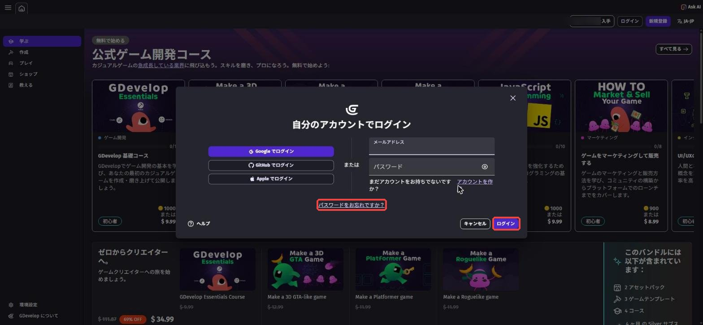
💡 15分たっても直らないときは、無理をせずそこで止めてOK。
どこで止まったかをメモして、第1回の講習に持ってきてね。
0-6. ✅ チェックリスト
全部チェックできたら準備完了！
🎉 第1回では、騎士に着がえて、マウスでねらってナイフを投げるよ。